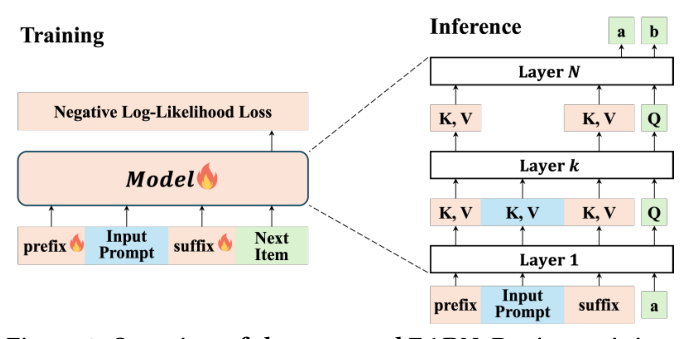

EARN: Efficient Inference Acceleration for LLM-based Generative Recommendation by Register Tokens (基于寄存器 Token 的 LLM 生成式推荐高效推理加速)
- 会议/期刊: KDD 2025
- 作者与机构: Chaoqun Yang (清华), Xinyu Lin / Xianjing Han / Tat-Seng Chua (NUS), Wenjie Wang (USTC), Yongqi Li (PolyU), Teng Sun (山大)
- 推荐链路定位: 生成式端到端（LLM 自回归生成 item identifier 的推理加速）
- 研究方向: 大语言模型推荐 / 生成式推荐
- 论文原文: https://arxiv.org/abs/2507.00715v1
- 开源代码: https://github.com/transcend-0/EARN
TL;DR (1分钟核心速览)
LLMRec 因超长 prompt 与 KV Cache 内存压力导致推理延迟高，而缓存压缩在仅 1–5 步解码的推荐任务上加速有限、prompt 压缩又易丢弃关键交互历史。EARN 通过分析发现 LLMRec 存在「层间注意力稀疏反转」与「首尾双注意力汇」两大现象，在输入首尾插入可学习寄存器 token，用前 \(k\)层把任务指令与交互历史压缩进寄存器，第\(k\) 层后直接剪除 prompt token。在 Beauty/Games/MovieLens 三数据集、LC-Rec/TIGER 两方法、Llama/Qwen 两架构上，实现最高 3.79× 加速、80.8% KV Cache 缩减，且 Recall/NDCG 全面优于全量微调。
Background & Motivation (背景与核心矛盾)
- 主流范式: LLMRec 将任务指令与用户历史交互拼成 prompt，自回归生成 item ID；推理分 prefilling（矩阵乘、compute-bound）与 decoding（向量-矩阵乘、memory-bound）两阶段，KV Cache 随序列线性膨胀。
- 前人局限: ① 缓存压缩（StreamingLLM/SnapKV）虽能砍 90%+ cache，但推荐解码仅 1–5 步，端到端加速仅 1.0–1.2×；② prompt 压缩（POD/500xCompressor）在推荐中难以区分 item 重要性，高压缩比下 Recall 直接崩到 0.0005 量级。
- 核心洞察 (Key Insight): 作者在 3 数据集 × 2 方法 × 2 架构上观察到：层间稀疏反转——NLP 任务前稀疏后稠密（0.06→0.03），LLMRec 恰好相反（0.01→0.07），即前几层信息密集、后层高度冗余；双注意力汇——注意力同时沉向序列头部与尾部窄区间，尾部 token 可见全部前序 token，天然具备摘要能力。
- 本文切入点: 既然前 \(k\)层已把信息汇总到首尾，就让首尾寄存器 token 承接压缩职责，后\(N-k\) 层只算寄存器与生成 token。
Method (核心方法设计)
1. 整体框架 (Overall Architecture)
输入序列重构为 \(X=[R_{\text{prefix}}; \text{Prompt}; R_{\text{suffix}}]\)，其中\(R_{\text{prefix}}\)替换原 BOS token 承担「任务指示 + 注意力分流」，\(R_{\text{suffix}}\)置于交互历史末尾承担「历史摘要」。训练时全序列参与前向，但第\(k\)层之后注意力只保留寄存器与生成 token；推理时 prefilling 与 decoding 均在第\(k\) 层后物理移除 prompt 的 KV，从而同时削减 FLOPs 与显存访问。整个流程无需改动 LLM 主干结构，仅新增两组可学习 embedding 并端到端微调。
flowchart TD
A["输入: R_prefix + Prompt(指令+历史) + R_suffix"] --> B["前 k 层: 全 token 注意力, 信息汇入寄存器"]
B --> C["第 k 层后: 剪除 Prompt token"]
C --> D["后 N-k 层: 仅寄存器+生成 token 计算"]
D --> E["自回归生成 item identifier"]
2. 关键设计拆解 (Key Designs)
-
前缀寄存器 (Prefix Register)：动机来自 head sink——原 BOS 吸收冗余注意力但无任务语义。用可学习虚拟 token 替换 BOS，既保留分流功能又注入推荐任务先验（借鉴 prompt tuning）。消融显示去掉它 R@20 从 0.0273 降至 0.0252（Llama, \(k{=}7\)），说明其作用是「任务感知增强」而非信息承载。
-
后缀寄存器 (Suffix Register)：动机来自 tail sink——序列末 token 可见全部前序，具备摘要潜力。将 \(n\)个可学习 token 放在历史交互之后，由前\(k\)层放大其摘要能力。这是性能主导项：去掉后 R@10 从 0.0174 崩至 0.0041（Llama,\(k{=}7\)），且\(k\) 越小跌幅越大，说明低层更依赖后缀寄存器承载的压缩历史。
-
训练目标、负采样与推理效率：采用标准 next-token 负对数似然，无额外负采样： $\(\mathcal{L}=-\sum_{j=1}^{|Y|}\log P(Y_j\mid X,Y_{<j})\)$ 与普通微调的唯一差异是第 \(l>k\)层注意力掩掉 prompt token。效率上，注意力 FLOPs 比\(\Gamma_{\text{attn}}\approx k/N\)，KV Cache 缩减比\(\Gamma_{\text{cache}}\approx (N-k)/N\)，理论加速\(\Omega\approx N/k\)；典型配置\(N{=}32,k{=}8,r{=}2\)下 cache 降至 75%、加速约 4×。默认超参启发式：\(k\)取总层数 1/4，\(n{=}1\)（前后各一）。
Experimental Setup & Evaluation Protocol (实验设置与评估协议)
- 数据集与预处理: Beauty、Games、MovieLens-1M 三个真实交互数据集，沿用 LC-Rec/TIGER 的 item identifier 构造与序列切分（详见原文附录 A.3）。
| 数据集 | 领域 | 说明 |
|---|---|---|
| Beauty | 美妆 | 与 Games 同为 Amazon 类目，序列较短 |
| Games | 视频游戏 | 交互较密集 |
| MovieLens-1M | 电影 | 用户-电影评分转隐式交互 |
- 数据划分与防穿越 (Splitting Strategy): 沿用 LLMRec 主流的时间序 next-item 预测划分（历史 \(i_1..i_T\)预测\(i_{T+1}\)），训练/验证/测试按用户序列切分。
- 排名评测协议 (Ranking Protocol): 生成式范式下以 beam/贪心生成 item identifier 后计算 Recall@{10,20} 与 NDCG@{10,20}，非全库打分；效率侧测 Walltime Speedup \(\omega\)、Throughput\(\tau\)、KV Cache Reduction\(\gamma\)、KV Cache Memory\(\sigma\)。
- 对比基线与超参设置: 基线覆盖 Finetune、SkipLayers、prompt 压缩（POD、500xCompressor）、cache 压缩（StreamingLLM、SnapKV）、gist 类（Gist、AnLLM）；主干为 Llama-7B（MHA）与 Qwen2.5-7B（GQA），方法实例化于 LC-Rec 与 TIGER。
Key Experimental Results (实验关键数据)
1. 主实验对比 (Main Results)
LC-Rec + Llama-7B（节选，完整见原文 Table 1）：
| 数据集 | 方法 | \(\omega\)↑ | \(\gamma\)%↑ | R@10 | R@20 | N@20 |
|---|---|---|---|---|---|---|
| Beauty | Finetune | 1.00 | 0.0 | 0.0145 | 0.0225 | 0.0108 |
| Beauty | 500xCompressor | 2.31 | 74.8 | 0.0005 | 0.0006 | 0.0003 |
| Beauty | SnapKV | 1.20 | 94.5 | 0.0054 | 0.0061 | 0.0032 |
| Beauty | Gist | 1.18 | 17.5 | 0.0048 | 0.0077 | 0.0036 |
| Beauty | EARN | 3.79 | 80.5 | 0.0167 | 0.0265 | 0.0124 |
| Games | Finetune | 1.00 | 0.0 | 0.0167 | 0.0273 | 0.0138 |
| Games | EARN | 3.53 | 80.8 | 0.0180 | 0.0291 | 0.0142 |
| MovieLens | Finetune | 1.00 | 0.0 | 0.0247 | 0.0449 | 0.0288 |
| MovieLens | EARN | 3.21 | 79.7 | 0.0259 | 0.0452 | 0.0341 |
LC-Rec + Qwen2.5-7B 上 EARN 同样取得 2.71–3.11× 加速、66.7–75.2% cache 缩减，MovieLens R@20 从 0.0421 提升至 0.0591（+40.4%）。
2. 消融实验 (Ablation Study)
| 模型 | \(k\) | 配置 | R@10 | R@20 | N@20 |
|---|---|---|---|---|---|
| Llama | 7 | Finetune | 0.0145 | 0.0225 | 0.0108 |
| Llama | 7 | EARN | 0.0174 | 0.0273 | 0.0127 |
| Llama | 7 | w/o Register Training | 0.0048 | 0.0060 | 0.0025 |
| Llama | 7 | w/o Prefix Register | 0.0172 | 0.0252 | 0.0132 |
| Llama | 7 | w/o Suffix Register | 0.0041 | 0.0075 | 0.0031 |
| Qwen | 7 | EARN | 0.0155 | 0.0265 | 0.0122 |
| Qwen | 7 | w/o Suffix Register | 0.0044 | 0.0071 | 0.0031 |
3. 关键实验发现 (Key Findings)
- 寄存器必须训练，不能白嫖：直接在微调模型上插入寄存器推理（w/o RT），Llama \(k{=}7\) 的 R@10 相对掉 72%（0.0174→0.0048）、N@20 掉 80%，说明寄存器摘要能力是训练习得而非架构自带。
- 后缀寄存器是性能命脉，前缀寄存器是锦上添花：去掉 SR 导致 R@10 崩至 0.0041（-76%），而去掉 PR 仅小幅波动甚至 N@20 略升（0.0132 vs 0.0127），印证「历史压缩」比「任务指示」更关键；且 SR 在低层（\(k{=}7\)）的贡献显著大于高层（\(k{=}15\)）。
- 加速与精度存在明确甜点区：\(k<4\)（Llama）或\(k<7\)（Qwen）时加速高但 Recall 显著损失，\(k\ge13\)后加速骤降而 Recall 不再增长；\(k\)取 1/4 层数、\(n{=}1\) 即可在三个数据集上同时拿到高加速与正收益，且序列越长收益越大（20K 长度下加速达 7×）。
Highlights & Limitations (亮点、对比与审稿批判)
- 与代表作对比 (vs. Prior Work): 相比 StreamingLLM/SnapKV 只优化 decoding，EARN 同时压缩 prefilling 与 decoding；相比 500xCompressor 把历史压成单 token 导致精度归零，EARN 用「前 \(k\)层 + 首尾寄存器」保留可学习摘要路径；相比 Gist/AnLLM 用全部层做压缩（开销大、压缩比与精度难两全），EARN 只借前\(k\) 层，天然把「压缩成本」与「加速收益」解耦。
- 可迁移亮点: ① 「层间稀疏反转」诊断可直接用于其他长 prompt 生成式任务（如对话推荐、序列生成）的层剪枝定位；② 首尾双寄存器 + 第 \(k\) 层剪枝的范式可平移到任意 decoder-only LLM 的推理框架，无需改结构。
- 审稿级局限批判: ① 评测仅在 7B 级模型与三个中等规模数据集上，未验证 70B/ MoE 或工业级亿级 item 词表下的表现；② 寄存器训练需全参微调，冷启动成本与「训练时也剪枝」的一致性（训练仍算全序列前向）未被充分讨论；③ 生成式评测依赖 beam 解码，未报告与全库排序协议的可比性。
Rating (四维评分)
- 方法创新性 (Novelty): ⭐⭐⭐⭐ （从注意力稀疏反转与双 sink 现象反推架构设计，动机-机制-收益链条完整，但寄存器 token 本身非全新概念）
- 评估协议与实验扎实度 (Protocol & Experiments): ⭐⭐⭐⭐ （3 数据集 × 2 方法 × 2 架构 + 效率/精度双维度 + 完整消融与超参分析，惟缺大规模工业验证）
- 写作与数学规范度 (Clarity & Rigor): ⭐⭐⭐⭐ （FLOPs 与 KV Cache 复杂度推导清晰，\(\Gamma_{\text{attn}}\approx k/N\)、\(\Omega\approx N/k\) 结论直观，符号统一）
- 工业落地与复现价值 (Industrial & Practical Value): ⭐⭐⭐⭐⭐ （代码开源、无需改模型结构、默认超参启发式明确，3.79× 加速与 80% cache 缩减对毫秒级推荐场景直接可用）